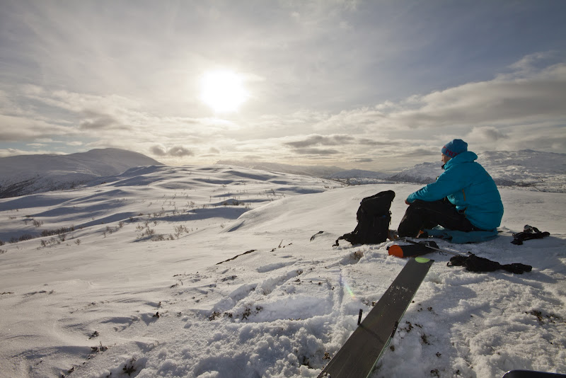

Pudder Nonfjell og Smøreggi
Denne helga var det store mengder snø til fjells, men varierande ver. Uansett, meir perfekte forhold skal du leite lenge etter. Lett å gå, trass store mengder pudder. "Pillows" er eit ord eg ikkje bruker ofte, men no var ein kvar stein eller anna utspring dekka av ein stor ball med kvite godsaker slik at det berre var å hive seg utfor ein kvar fjellskrent.
Dersom du ikkje er interessert i bilete, tekst og kart så kan du sjå filmbevis.
Nonfjell
Laurdag 11. februar var det tid for eit forsøk på Ingebjørgnuten med Anders og Eivind. Sikta var til tider håplaus, men det var mye positivt skrik og skrål på nedfarten grunna dei nydelege forholda.

GPS-ruta:
Smøreggi
Søndag 12. februar vart det solotur til Smøreggi. Denne gongen var og veret i godt humør. Det var varmt nok til å gå store delar av turen i t-skjorta (tjukk ull, riktignok), og utsikta var lettare magisk. Det var og nedfarten.


GPS-ruta: